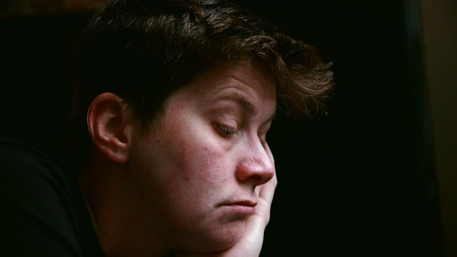

Grammatikfokus
Die kleinen Würzwörter der gesprochenen Sprache: denn, mal, doch, ja, eben, halt, wohl. Sie ändern nicht die Info, sondern die Stimmung. 🧂
Die Regel in 3 Schritten
Was machen diese kleinen Wörter? Ganz einfach:

1️⃣ Was sind Modalpartikeln?
„Komm doch mit!“ (ermuntert) · „Komm mit.“ (neutral)
Kleine, meist unbetonte Wörter in der gesprochenen Sprache. Sie zeigen die Haltung oder das Gefühl des Sprechers (Interesse, Überraschung, Resignation …), aber sie ändern die Info des Satzes nicht.

2️⃣ Wo stehen sie im Satz?
Im Mittelfeld, meist nach dem Verb und dem Pronomen: „Wo bist du denn?“ · „Das ist ja toll!“ Anders als Adverbien stehen sie nie am Satzanfang.

3️⃣ Gleiches Wort, andere Funktion
„doch“, „ja“, „mal“ sind auch normale Wörter. Als Modalpartikel sind sie unbetont und ändern nur die Stimmung: „Das weiß ich ja.“ (= wie du weißt)
| Partikel | drückt aus | Beispiel |
|---|---|---|
| denn | Interesse (in Fragen) | „Wo bist du denn?“ |
| mal | freundlich auffordern | „Komm mal her!“ |
| doch | ermuntern, vorschlagen | „Komm doch mit!“ |
| ja | Überraschung / „wie du weißt“ | „Das ist ja toll!“ |
| Partikel | drückt aus | Beispiel |
|---|---|---|
| eben / halt | Resignation, „ist so“ | „Das ist eben/halt so.“ |
| wohl | Vermutung | „Er ist wohl krank.“ |
| doch (betont) | Widerspruch | „— Du kommst nicht. — Doch!“ |
| ja (betont) | Warnung / Nachdruck | „Mach das ja!“ |
| schon | beruhigen | „Das schaffst du schon.“ |
| Partikel | Nuance | Beispiel |
|---|---|---|
| etwa | Befürchtung (in Fragen) | „Hast du etwa vergessen?“ |
| bloß / nur | Wunsch oder Drohung | „Wärst du bloß hier!“ / „Mach das bloß nicht!“ |
| ruhig | beruhigen, erlauben | „Du kannst ruhig fragen.“ |
| doch mal | höfliche Bitte (Kombi) | „Sieh dir das doch mal an!“ |
| ja wohl | Nachdruck / Empörung | „Das ist ja wohl klar!“ |
🎡 Drehrad
Beispiele im Kontext
Mehrere Sätze pro Partikel aus dem echten Alltag + ein Mini-Dialog zum Aufklappen. Genau diese Partikeln kommen im Sprechteil wieder! (Niveau oben umschalten.)
🎭 Mini-Dialog
A: Wo bist du denn?
B: Ich bin noch im Büro.

🎭 Mini-Dialog
A: Hilfst du mir mal kurz?
B: Klar, sofort!
🎭 Mini-Dialog
A: Ich weiß nicht, ob ich mitkomme.
B: Komm doch einfach mit!
🎭 Mini-Dialog
A: Überraschung!
B: Das ist ja eine tolle Idee!
🎭 Mini-Dialog
A: Gehst du mit feiern?
B: Ich muss ja morgen früh raus.

🎭 Mini-Dialog
A: Du hast das nicht gesagt.
B: Doch, habe ich!

🎭 Mini-Dialog
A: Der Zug ist weg.
B: Dann nehmen wir eben den nächsten.

🎭 Mini-Dialog
A: Warum stehst du so spät auf?
B: Ich bin halt kein Morgenmensch.
🎭 Mini-Dialog
A: Wo ist Anna?
B: Sie steckt wohl im Stau.
🎭 Mini-Dialog
A: Wo gehst du hin?
B: Ich hole mir mal einen Kaffee.
🎭 Mini-Dialog
A: Ich nehme dein Fahrrad.
B: Pass ja gut darauf auf!

🎭 Mini-Dialog
A: Das Meeting fällt aus.
B: Was soll das denn jetzt?

🎭 Mini-Dialog
A: Wer ist das?
B: Das ist doch Maria aus dem Kurs!
🎭 Mini-Dialog
A: Ich habe Angst vor der Prüfung.
B: Das schaffst du schon!
🎭 Mini-Dialog
A: Es regnet in Strömen.
B: Hätte ich bloß einen Schirm dabei!
🎭 Mini-Dialog
A: Darf ich dein Handy nehmen?
B: Lass das bloß liegen!
🎭 Mini-Dialog
A: Darf ich mich setzen?
B: Setz dich ruhig!

🎭 Mini-Dialog
A: Ich finde die Tickets nicht.
B: Hast du sie etwa vergessen?
🎭 Mini-Dialog
A: Ich verstehe die Aufgabe nicht.
B: Lies sie dir doch mal in Ruhe durch.
🎭 Mini-Dialog
A: Er sagt, du bist schuld.
B: Das ist ja wohl die Höhe!
🎭 Mini-Dialog
A: Wir hätten früher losfahren sollen.
B: Eben! Das sage ich die ganze Zeit.
🎭 Mini-Dialog
A: Noch zwei Tage bis zum Urlaub.
B: Wäre es nur schon so weit!
Üben
Gemischte, interaktive Übungen — die Antworten sind quer gemischt (nicht der Reihe nach). Niveau oben umschalten.

✍️ Welche Partikel passt?
🖼️ Bild-Quiz: Welche Partikel zur Stimmung?
„Wie heißt du ___?“ (interessiert)„Ruf mich ___ an!“ (freundlich)„Komm ___ mit uns!“ (ermuntern)„Sei ___ still!“ (Nachdruck)„Das weißt du ___.“ (bekannt)„Du hast ___ nicht alles vergessen?“„Nimm dir ___ Zeit.“ (erlauben)✅ Was drückt die Partikel aus?
🔀 Partikel ↔ Bedeutung
Partikel
Bedeutung
Partikel
Bedeutung
Partikel
Nuance
🧩 Situation ↔ passender Satz
Situation
Satz
🏆 Das große Modalpartikel-Quiz
🗣️ Sprechen & wiederholen
Die 90-Sekunden-Challenge: Thema ziehen, Stichpunkte lesen und 90 Sekunden am Stück frei sprechen. Passt sich dem Niveau an (oben umschalten).
⏱️ 90-Sekunden-Challenge
💬 Dialoge zum Mitlesen
Lest die kurzen Alltagsszenen zu zweit laut vor – Rolle A und Rolle B. Die markierten Teile zeigen die Modalpartikel. Tauscht danach die Rollen. Zum freien Üben: unten eine Seite verdecken – die andere spricht frei, zum Prüfen auf die verdeckte Blase tippen. (Niveau oben umschalten.)